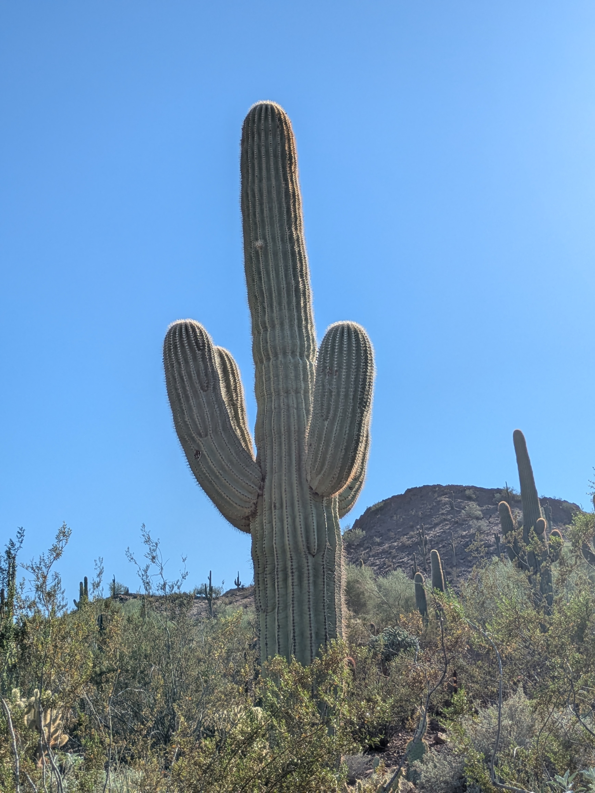

Saguaro Cactus (Carnegiea gigantea)

You cannot start a conversation about Arizona’s native plant life without the symbol of the state itself. One of the most iconic and plentiful cacti found here in Arizona. They grow in the southern parts of Arizona in the Sonoran Desert, and can reach great heights upwards of 50 ft. They are a crucial part of Arizona’s natural eco system as they are a favored home of birds like woodpeckers. Even after the bird leaves the nest, they can remain as a host for any number of other small creatures. Saguaros reproduce with the flowers that bloom at their tips from late April to June.
| Saguaro Cactus | description | amount |
|---|---|---|
| Light Exposer | The saguaro cactus thrives best in full sun, planting it where it can get unobstructed sunlight for most of the day is ideal. | 8 - 12 hours |
| Watering | An established saguaro should rarely if ever be watered, as they store most of the water they will need in their stems. For younger potted plants, water deeply when the soil is bone dry. | 2-3 weeks (6in deep) |
| Soil Needs | The saguaro cactus prefer well-draining soil. A mix of sand, gravel, as well as a cactus potting mix is ideal, avoid heavy ingreadients with high ph levels and water retention. | mix sand, gravel, and cactus potting mix. |